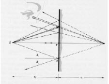
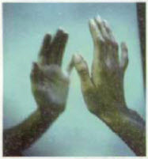
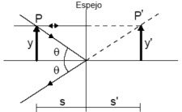
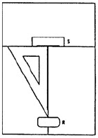
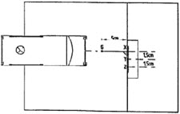

| Objetivo: |
1) Estudia qué propiedades tienen las imágenes en el espejo plano.
2) Estudia cómo se forma la imagen de un objeto en un espejo plano; determina la distancia de la imagen al espejo.
|
|
| Introducción: |
|
La formación de imágenes en los espejos es una consecuencia de la reflexión de los rayos luminosos en la superficie del espejo. La óptica geométrica explica este familiar fenómeno suponiendo que los rayos luminosos cambian de dirección al llegar al espejo
siguiendo las leyes de la reflexión.
En la Figura 1 puede observarse un haz estrecho de rayos luminosos que proceden de una fuente puntual S y se refleja en un espejo
plano. Después de la reflexión, los rayos divergen exactamente como si procedieran de un punto 'S’ detrás del plano del espejo,
como puede demostrarse utilizando la ley de la reflexión para diversos rayos. El punto 'S’ se denomina la imagen del objeto S.
Cuando estos rayos entran en el ojo, no puede distinguirse de los rayos que procederían de una fuente situada en 'S’ sin que hubiese
espejo. La imagen se denomina imagen virtual debido a que la luz no procede realmente de la imagen. La imagen 'S’ está en la
línea que pasa por el objeto S y es perpendicular al plano del espejo, a una distancia detrás de dicho plano igual a la distancia a que
el objeto está del mismo. La imagen puede verse siempre que el ojo esté en cualquier lugar de la región indicada, de modo que una
línea trazada desde la imagen del ojo pasa cortando el espejo. El objeto no necesita estar directamente frente al espejo. Una imagen
puede verse siempre que el objeto no esté detrás del espejo.
(Ver Figura 1)
Si observamos la imagen de la palma de la mano derecha frente a un espejo, vemos que es del mismo tamaño que el objeto, pero no
es la misma que observaría otra persona frente a uno ni la que nosotros veríamos si mirásemos la palma de nuestra mano (Figura 2).
La imagen de una mano derecha que da un espejo es una mano izquierda.
Esta inversión derecha-izquierda es el resultado de una inversión de profundidad; es decir, la mano se transforma de una mano
derecha a otra izquierda porque el espejo ha invertido la palma y el dorso de la mano.
(Ver Figura 2)
Para estudiar la imagen de un objeto mediante un espejo plano, podemos dibujar por ejemplo una flecha y localizar la imagen de la
punta de la flecha como se indica en la Figura 3. Empleando la ley de la reflexión, podemos trazar un rayo desde la punta de la
flecha que incida en forma perpendicular al espejo. Este rayo se reflejará sobre sí mismo, por lo que la imagen de la punta de la
flecha estará sobre su prolongación por detrás del espejo. Para encontrar la posición exacta de la misma, hacemos incidir otro rayo
con un ángulo ?, y el rayo reflejado formará el mismo ángulo ?. Por lo tanto, en la intersección de las prolongaciones de ambos
rayos se encontrará la imagen de la punta de la flecha. Podemos ver que la imagen está a la misma distancia detrás del espejo como
el objeto está delante de él, y que la imagen es derecha y tiene el mismo tamaño que el objeto.
(Ver Figura 3) |
|
|
| Desarrollo Experimental: |
Preparación:
- Divide la hoja de papel transversalmente en proporción 1/3 a 2/3 con una raya a lápiz, como en la Figura 4
- Coloca el espejo sobre la línea a lápiz. La superficie del espejo debe estar orientada hacia el borde de la mesa (Figura 4)
- Coloca una regla con uno de sus lados tocando el espejo
- Escribe sobre la superficie ancha de la goma la palabra “SAAL” y colócala transversalmente en el otro extremo de la regla, con
las letras mirando al espejo (Figura 4)
Experimento 1:
Propiedades de las imágenes especulares
Observa la imagen especular de la regla y de la goma escrita; para esto debes mirar al espejo a ras de la mesa.
Compara la imagen con el original; anota tus comprobaciones en la Tabla 1.
Experimento 2:
Formación de la imagen en el espejo plano
Marca en la hoja de papel los puntos X, Y y Z y, en ángulo recto por X, el punto G, a las distancias indicadas.
Coloca el espejo plano con el borde en la línea vertical, de modo que las marcas X, Y y Z se encuentren dentro de la superficie
del espejo (figura 5).
Coloca el diafragma de una rendija en la caja luminosa, sobre la parte de la lente, y conecta la caja luminosa la fuente de
alimentación (12V-).
Coloca la caja luminosa de modo que el haz de luz incida primero en el punto G y luego en el punto X (Figura 2).
Marca con pares de cruces el haz de luz incidente y el reflejado.
Desplaza la caja luminosa con cuidado (no varíes la posición del espejo) hasta que el haz de luz estrecho incida sobre los puntos G e Y; marca de nuevo la trayectoria de los haces de luz incidente y reflejado.
Repite el experimento con los puntos G y Z.
Desconecta la fuente de alimentación y quita la caja luminosa y el espejo del papel.
Une entre sí las marcas correspondientes.
Ten en cuenta que todos los rayos incidentes pasan por el punto G.
Prolonga los rayos de luz reflejados más allá de la línea vertical (plano del espejo) con líneas discontinuas. ¿Qué compruebas?
Anota tus observaciones.
Mide la distancia g desde el punto G hasta la línea vertical (plano del espejo) y anota su valor.
Denomina B al punto de intersección de las prolongaciones y mide la distancia b del plano del espejo hasta el punto B. Anota
de nuevo el valor de tu medición.
|
| Resultados y Conclusiones: |
|
1) Propiedades de las imágenes especulares
2) Formación de la imagen en el espejo plano
Resultado de la prolongación de los rayos de la luz reflejados
Distancia del punto G al espejo g= _________cm. (distancia del objeto)
Distancia del punto B al espejo b= _________cm. (distancia del objeto)
Con los resultados obtenidos
1) ¿Qué propiedades de la imagen del espejo, en comparación con el original, se pueden deducir de tus observaciones?
(Tabla 1).
2) Compara la distancia g del punto G al espejo (distancia del objeto) con la distancia b del punto B al espejo (distancia de la
imagen), y con las que has observado en la primera parte del experimento. Formula un enunciado.
3) Imagínate que mides 1,60 m y estás delante del espejo de un armario. Si te ves de la cabeza a los pies, ¿qué longitud mínima
tendrá el espejo? Dibuja un esquema en el que se vea la trayectoria de la luz desde tu cabeza y tus pies hasta tus ojos.
4) ¿Por qué te ves al pasar por la luna de un escaparate?.
5) Di algunas aplicaciones de los espejos planos.
|
|
|
| Figura 1 |
|  |
| |
| Figura 2 |
|  |
| |
| Figura 3 |
|  |
| |
| Figura 4 |
|  |
| |
| Figura 5 |
|  |
|